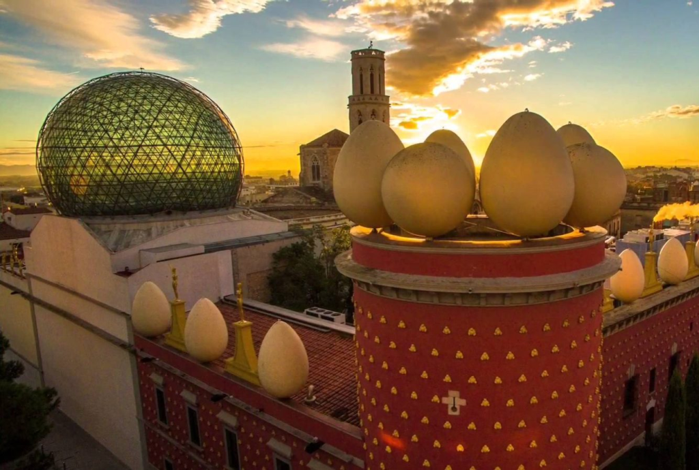
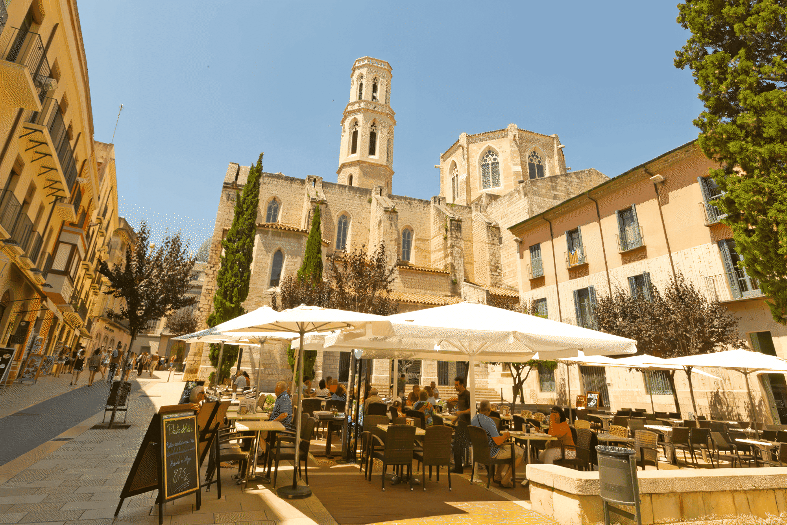

Figueras
Figueras, capitale de la comarque de l'Alt Empordà en Catalogne, Espagne, est une ville riche en histoire et en culture. C'est la ville natale de l'artiste mondialement connu Salvador Dalí, et abrite le Teatre-Museu Gala Salvador Dalí, un musée dédié à son œuvre.
La ville de Figueras a une histoire fascinante, avec des origines remontant à l'époque des Visigoths. Au fil des siècles, la ville a connu des hauts et des bas, y compris des incendies, des occupations françaises et des bombardements pendant la guerre civile espagnole. Cependant, Figueres a réussi à se rétablir à chaque fois, et depuis les années 1950, elle s'est consolidée autour de l'industrie du tourisme.
Parmi les sites à ne pas manquer à Figueras, citons le château de Sant Ferran, l'église paroissiale de Saint-Pierre, le musée de l'Empordà. La ville est également bien desservie par les transports, avec une connexion au réseau de trains à grande vitesse depuis 2010, permettant des services directs de TGV vers Paris et des connexions vers Madrid-Barcelone via l'AVE.
En dehors du centre-ville, Figueras est entourée de paysages magnifiques et offre de nombreuses possibilités pour les amateurs de plein air. Vous pouvez explorer le Parc Naturel de l'Albera, qui abrite une grande variété de flore et de faune, ainsi que de belles randonnées. Les plages de la Costa Brava sont également à proximité et offrent de nombreuses activités nautiques.
En résumé, Figueras est une ville qui offre une combinaison unique d'histoire, de culture et de beauté. Que vous soyez un amateur d'art, un passionné d'histoire ou simplement à la recherche d'un endroit pour vous détendre et vous échapper, Figueres a quelque chose à offrir à tout le monde.
Théâtre - Musée Dalí
Le Théâtre-Musée Dalí de Figueras est un lieu unique dédié à l'art et à la personnalité de Salvador Dali. Ce musée abrite la plus grande collection d'œuvres de l'artiste catalan au monde, avec plus de 1 500 pièces, y compris des peintures, des sculptures, des dessins et des objets d'art.
La visite du musée est une expérience surréaliste en soi, avec des éléments de design étranges et des œuvres d'art incroyables. Les visiteurs pourront découvrir les principales étapes de la vie de Dali et sa relation avec Figueras, ainsi que les influences et les techniques qui ont façonné son œuvre. Le Théâtre-Musée Dali est un must pour tous les amateurs d'art et les curieux qui veulent découvrir l'univers fascinant de ce célèbre artiste.
L’Église Saint-Pierre de Figueras
L'église Saint-Pierre de Figueras est un édifice religieux de style néoclassique construit au XIXe siècle. Elle est remarquable pour son grand dôme surmonté d'une croix et pour son imposante façade en pierre, ornée de colonnes et d'un fronton triangulaire. L'intérieur de l'église abrite de belles œuvres d'art religieux, notamment des sculptures et des peintures.
La visite de l'église Saint-Pierre est un incontournable pour les amateurs d'architecture et d'art sacré lors d'une visite à Figueras.
Chateau de San Fernando
Le château de San Fernando de Figueras est une fortification militaire construite au XVIIIe siècle pour protéger la ville des invasions françaises. Il est aujourd'hui utilisé pour accueillir des expositions temporaires et événements culturels. Le château offre une vue panoramique sur la ville de Figueras et est accessible gratuitement pour les visiteurs.
Jardin de la Rambla
Le Jardin de la Rambla est un parc public situé dans la ville de Figueras en Espagne. Le parc est situé sur l'ancienne ligne de chemin de fer, qui a été transformée en une belle promenade. Le jardin abrite de nombreux arbres et plantes exotiques, des aires de jeux pour enfants, des fontaines, des bancs pour se détendre et des espaces pour des concerts en plein air et des événements culturels.
C'est un endroit agréable pour une promenade paisible ou pour passer du temps avec la famille et les amis.
Musée du jouet
Le musée du jouet de Figueras est un endroit amusant et fascinant à visiter pour les enfants comme pour les adultes. Il abrite une collection impressionnante de jouets du monde entier, allant des jouets en bois traditionnels aux jeux vidéo modernes. Vous pouvez découvrir l'évolution des jouets au fil du temps et apprendre comment les jouets ont reflété les changements sociaux, culturels et technologiques. Il y a également des activités interactives pour les enfants, ce qui en fait une destination idéale pour une sortie en famille.